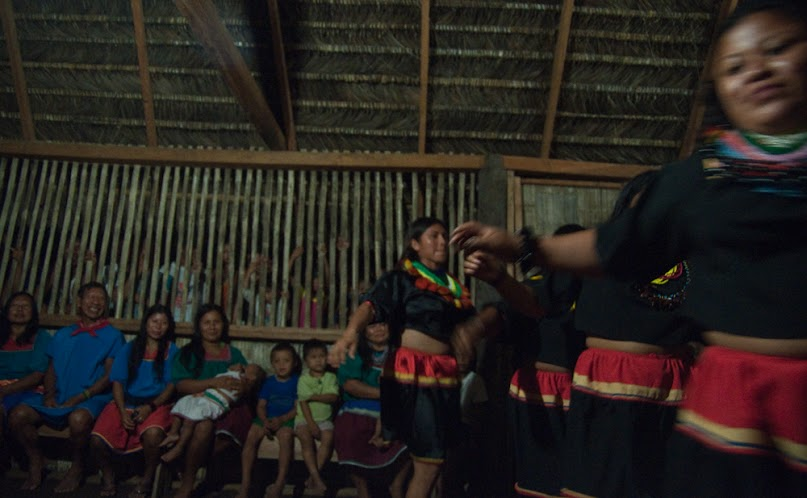

ClearWater in Ecuador
The Amazon rainforest produces 20% of our planet's freshwater. Yet, in the northeastern Ecuadorian Amazon, which is the ancestral home of five indigenous tribes, the rivers and streams have been contaminated by decades of reckless oil operations. More than 30,000 indigenous peoples and homesteading farmers in the northeastern Ecuadorian Amazon are suffering a massive public health crisis, including a wave of cancers, birth defects and spontaneous miscarriages, due principally to the persistence of oil-related heavy metals and toxins in the surface and groundwater. The absence of readily available clean water has also contributed to cultural loss, developmental disabilities, and economic impoverishment. While the local Amazonian communities fight a protracted and contentious lawsuit with the American oil giant Chevron, demanding the cleanup and restoration of their territory, ClearWater is partnering with five indigenous tribes--Cofan, Siona, Secoya, Quichua, and Huaorani--to address the immediate environmental and health crisis.
Through community-led construction of family-size rainwater harvesting systems, which have proven to be one of the most practical, effective, and culturally appropriate solutions to the water crisis gripping the region, ClearWater works with the tribes to meet the needs of the affected indigenous population of Sucumbios and Orellana provinces (the former Chevron oil concession area). Indeed, in the absence of a full-scale environmental remediation, rainwater harvesting might be the only viable and lasting solution.
ClearWater has installed over XX units in YY communities, but there are ZZ more affected communities living without adequate supplies of fresh water right now. Find out how you can help.
Scroll ▼The Secoya
- Community: San Pablo de Kantesiaya
- 17 Rainwater Catchment Systems
- 100 people benefitted
- 4 community technicians trained
Installation of rain catchment systems first began in the Secoya community of San Pablo de Kantesiaya in May 2012. The construction of 17 units has provided clean water to more than 100 Secoya community members. Similar to the other nationalities in the region, the Secoya and their way of life have been impacted by upstream oil operations. Despite a significantly reduced population, the Secoya are highly organized and dedicated to building clean water solutions for their people. Plans are underway to continue installation of 96 systems in July, so that all Secoya families have access to clean water.
History
The Secoya, or Siekopai, people traditionally inhabited a very large territory between the Putumayo and Napo rivers in Ecuador, Colombia, and Peru. They are renowned for their shamanic acumen and knowledge of medicinal plants. Their language, Pai’koka, is part of the Western Tucanoan language group. Missionary activity, rubber extraction, colonization, African palm production, and oil activity have reduced Secoya territory to less than 30,000 hectares in Sucumbíos Province, Ecuador--a tiny fraction of their ancestral territory.
The Secoya now number around 600 people in Ecuador and around 900 in Peru. In Ecuador, the Secoya are concentrated in three communities along the Aguarico River: San Pablo de Katetsiaya, Siecoya Remolino Ñe'ñena and Eno. The Secoya suffer heavily from oil-related contamination. Rivers have been contaminated, making much of the water unsafe to drink or bathe in. The Secoya are no longer able to get by solely on traditional subsistence activities like hunting, fishing, and growing edible crops. As a result, African palm production and oil extraction have a strong influence in the communities, rapidly degrading the remaining bit of rainforest the Secoya call home.
Read all Secoya storiesFeatured Story 1
Sed ut perspiciatis unde omnis iste natus error sit voluptatem accusantium doloremque laudantium, totam rem aperiam, eaque ipsa quae ab illo inventore veritatis et quasi architecto beatae vitae dicta sunt explicabo.
Read moreFeatured Story 2
Sed ut perspiciatis unde omnis iste natus error sit voluptatem accusantium doloremque laudantium, totam rem aperiam, eaque ipsa quae ab illo inventore veritatis et quasi architecto beatae vitae dicta sunt explicabo.
Read moreFeatured Story 3
Sed ut perspiciatis unde omnis iste natus error sit voluptatem accusantium doloremque laudantium, totam rem aperiam, eaque ipsa quae ab illo inventore veritatis et quasi architecto beatae vitae dicta sunt explicabo.
Read moreThe Siona
- Community Sotosiaya
- 20 Rainwater Catchment Systems
- 100 people benefitted
- 4 community technicians trained
ClearWater began installation in the Siona community of Sotosiaya in October of 2012. 20 rain catchment systems were built, benefitting over 100 people. The Siona have suffered greatly during and after oil operations by US oil companies Texaco and Occidental Petroleum, and by state oil company Petroecuador, resulting in territorial loss, environmental degradation, and serious health problems. Siona technicians working for ClearWater are dedicated to improving the living conditions for all Siona community members by providing them with clean drinking water. Installation will continue in the fall of 2013, bringing clean water to the remaining 7 Siona communities.
History
The Siona people have often been paired with their Secoya relatives, both members of the Western Tucanoan language family. Although formerly considered one ethnic group, the “Secoya-Siona”, these two are increasingly proving that they are quite independent of each other. The Siona live in the territories of modern Colombia and Ecuador. In Ecuador, they are settled in the province of Sucumbios, in the cantons of Putumayo, and Shushufindi. Their population is approximately 350 and 400 people sparsely settled in several communities, including Puerto Bolivar, Sottosiaya, Bi'aña and Orahuëaya, amongst others. Their territory borders that of the Secoya people, with whom they share a common language and ancestry. Like the Secoya, the Siona currently suffer from oil contamination, African palm production, deforestation, and expanding colonist settlement in their territory.
More about the SionaThe Waorani
- Community Yawepare and Nampo Eno
- 13 Rainwater Catchment Systems
- 75 people benefitted
- 4 community technicians trained
Due to their location downriver from oil operations, even Waorani communities within the protected Yasuní National Park have been affected. ClearWater began a pilot project in the communities of Yawepare and Nampo Eno on March 10, 2013 working with the Waorani and using a new design for metal catchment system frames that will last five times longer than wooden frames. 13 systems were built, benefitting 75 people. ClearWater will be expanding its work with the Waorani in the near future, in collaboration with the Waorani Nationality Organization of Orellana, ONWO, to provide clean water for all Waorani communities in Orellana province.
History
The Waorani once maintained one of the largest territories of all indigenous Amazonians in Ecuador, within the modern provinces of Orellana, Napo, and Pastaza. They traditionally lived as nomadic hunter-gatherers in small clan settlements. Missionary groups relocated many Waorani families into large communities with the purpose of converting them to Christianity.
The Waorani were the most recently contacted of all Ecuadorian indigenous peoples, first reached by a missionary group in 1956. Since first contact, the Waorani have experienced a rapid and difficult insertion into mainstream Ecuadorian society. Their territories have been greatly reduced, and their remaining lands impacted by logging, oil extraction, and colonist settlement, among other issues. Several Waorani groups have rejected contact and move ever deeper into the forest. Oil activity and the construction of oil roads has been severely detrimental to Waorani lands. Despite the location of several Waorani communities within the supposed protection of Yasuní National Park, being downriver from oil operations has still drastically affected these communities and their water supply.
More about the WaoraniThe Kichwa
- Community of Rumipamba
- 53 Rainwater Catchment Systems
- 350 people benefitted
- 4 community technicians trained
The Kichwa of Rumipamba have been at the center of devastating oil operations for decades, as well as the fight to bring multinational oil company Chevron to justice. They have taken the environmental remediation of their territory into their own hands, painstakingly cleaning up the mess that the oil companies have left behind. Installation of 53 catchment systems has already begun in Rumipamba, starting in May of 2013, which will benefit approximately 350 people. ClearWater will also be working with other Kichwa communities in the province of Orellana in the near future, ensuring clean water for all oil-affected indigenous communities.
History
The Kichwa of the Amazon, also known as Quichuas or Runas, are the most numerous of Ecuador’s indigenous Amazonian peoples[.1]. The Kichwa were originally an assemblage of distinct indigenous Amazonian groups, forced together by the Spanish for purposes of religious conversion and control. The Kichwa language of the Andes was imposed upon them and unified these distinct peoples. Hundreds of years of forced cohabitation created a unique Amazonian culture, a distinct linguistic dialect reflecting their natural surroundings, and a profound knowledge of the rainforest environment. The Kichwa community of Rumipamba, located in the Auca Sur oil field, has been one of the hardest hit by Chevron-Texaco’s operations. Decades of reckless dumping into the rivers and streams, and a devastating oil spill from a ruptured pipeline in 1976, have resulted in a community with myriad health and social problems.
Maria Aguinda, a Kichwa woman from Rumipamba who lost her husband and several children to pollution-related health problems, is the lead plaintiff of the lawsuit against Chevron. The Kichwa of Rumipamba have taken cleaning up after the oil companies into their own hands, but they still don’t have access to clean water.
More about the KichwaThe Cofan
- Community: Cofan Dureno
- 52 Rainwater Catchment Systems
- 350 people benefitted
- 4 community technicians trained
The ClearWater project broke ground in the community of Cofán Dureno from November, 2011 through February of 2012 when 52 rain catchment systems were built, providing 350 people with much-needed clean water. The Cofán have perhaps been the hardest hit by oil operations out of all indigenous nationalities in the Ecuadorian Amazon. The location of the majority of Cofán communities directly downriver from one of Ecuador’s largest oil fields— in operation for over 40 years— has resulted in serious illness and cultural loss. The Cofán, who have been involved in the case against Chevron-Texaco since the beginning, are now active participants in the ClearWater project and intend to keep working with the project in the future, until all Cofán families have access to clean water. You can read about working in Cofán Dureno here.
History
Centuries ago, the Cofán people moved down from the foothills of the Andes Mountains to inhabit a large territory between the Aguarico River in the northern Ecuadorian Amazon and the Guamués River in southern Colombia. It is estimated that the Cofán (also written as Kofán, or A’I as they prefer to be referred to), numbered between 15,000 and 20,000 people before Spanish conquest and colonization. A brutal history of conquest, abuse, and disease followed.
Extractive industry, colonization, and forced religious conversion took its toll on the Cofán, and they now number around 2,100 people living in a significantly reduced territory. Oil extraction has contaminated much of the Cofán’s lands and rivers and health problems are frequent in Cofán communities, particularly in Dureno, Duvuno, and Sinangüé y Chandía Na'en. The Cofán have been inspiring protagonists in the 19-year legal battle against Chevron, yet they continue to suffer from the devastating contamination in their communities, most significantly the lack of clean water.
More about the Kichwa